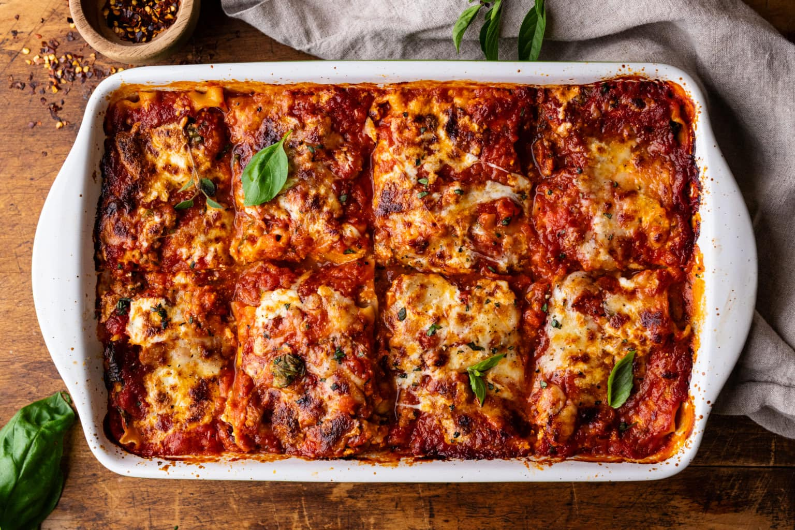

Sweet & Spicy Italian Sausage Lasagna

Description
This Italian sausage lasagna is one of my family’s favorite lasagna recipes, and for good reason!
Each layer is made up of tender pasta noodles, sweet & spicy Italian sausage, three Italian cheeses,
and lots of fresh herbs. It’s cheesy, rich, and simply irresistible!
I hope you love this recipe just as much as my family and I do!
Ingredients
- Lasagna noodles
- Italian sausage
- Marinara
- Mozzarella
- Parmesan
- Ricotta
- Fresh basil
- Oregano
- Garlic
- Egg
Steps
If you are using boiled noodles, cook them in a large pot of well-salted boiling water as the package instructs.
- Remove the sausage from the casing and cook in a skillet pan until fully cooked through (about 5-7 minutes).
- In a medium-sized bowl, mix together ricotta, parmesan cheese, basil, garlic, egg, and salt & pepper.

- The first layer in the lasagna dish is spreading a layer of marinara on the bottom of the dish. Then layer with noodles, and spread a thin layer of the ricotta filling over top.
- Then top with an even layer of cooked sausage and fresh basil.

- Layer more sauce over top, then finish with mozzarella and parmesan cheese. Repeat layers: noodles, ricotta filling, sausage, fresh basil, sauce, and cheese until the layers are done.
- Final layer should be topped with sauce, mozzarella, and parmesan. Cover with foil and bake at 375F for 20 minutes, then remove foil and bake uncovered for an additional 20 minutes – broil on HIGH for the last 30-60 seconds to brown the top. Serve!